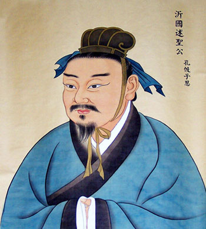

“述圣”子思子简介
子思子（公元前483年—前402年），是孔子嫡孙，名伋，字子思。子思的生平事迹已难详考。相传他受业于孔子的高足曾子，早年一度居住在卫国，游学于齐国，困于宋国。晚年返鲁，受鲁穆公尊礼。
子思之父孔鲤早于孔子离开了人世。子思少时就树立了继承祖辈道业的志向，养成了抗节守道、不降其志的品格。他接续家学，尤其继承发展了孔子的中庸思想。《汉书•艺文志》著录《子思》二十三篇，已佚。现存《礼记》中的《中庸》《表记》《坊记》《缁衣》，据学者考证，均为子思所著。子思以“中庸”为自己学说的核心，其思想被他的再传弟子孟子进一步继承和发展，形成了儒家学派中的思孟学派。后代对其多有追封，北宋被封为“沂水侯”，南宋被封为“沂国公”，元代被封为“沂国述圣公”，明嘉靖九年（公元1530年）被封为“述圣”。
其主要思想为：
至诚的本体论。子思把“诚”作为沟通天人的桥梁。《中庸》说：“诚者，天之道也；诚之者，人之道也。诚者不勉而中，不思而得，从容中道，圣人也。诚之者，择善而固执之者也。”“诚”是天道，努力把握“诚”则是人道。圣人是具有“诚”的人，是达到“天人合一”境界的人。“诚”是本体的体现，所以《中庸》说：“自诚明，谓之性；自明诚，谓之教。诚则明矣，明则诚矣。”
中庸的方法论。子思继承并发展孔子的中庸思想，提出“不偏不倚”“执两用中”的中庸观。“中庸”亦即“用中”，就是执行、施用中道，强调不偏不倚、无过无不及的处事方式与原则。中庸之道体现了“中行”的平衡智慧，提供了积极的“天人合一”和谐理念。这种处事方法使人认识到为人处世要事事适度，避免行为过激。
慎独的修身论。慎独是子思哲学境界修养论的重要组成部分。《中庸》说：“是故君子戒慎乎其所不睹，恐惧乎其所不闻。莫见乎隐，莫显乎微，故君子慎其独也。”慎独是谨慎其所作所为，是内心的专一、虔敬状态。马王堆帛书《五行》明确提出“独也者，舍体也”，将慎独更加精神化、内在化。子思的慎独思想以内在之心为出发点，通贯“五行”，持守“中和”，最终臻于“诚”的境界。慎独是于细微处见真章，于极高明处而道中庸，是子思哲学思想的精华所在。
“合外内之道”的知行观。子思对“德之行”与“行”进行区分，把“仁义礼智”内化为德，强调德的内在性，强调“德”是外在之行的根基，最终实现内化于心、外现于行的“知行合一”。仁义礼智的内化为孟子性善“四端”思想的提出，直接开启了孟子的性善论。《中庸》说：“成己，仁也；成物，知也。性之德也，合外内之道也，故时措之宜也。”又说：“君子尊德性而道问学，致广大而尽精微，极高明而道中庸。”子思把成己、成物结合起来，把尊德性与道问学结合起来，是对“合外内之道”的弘扬。

-- 中共山东省委组织部主办 --
Copyright 2013-2017 中共山东省委组织部 All rights reserved
鲁ICP备09016644号-3 地址 : 山东省济南市 技术服务热线 : 400-690-7927